<section>
  <div class="container">
    <h2>Development skills</h2>
    <div class="row">
      <article class="col-md-12">
        <h3>Web design</h3>
        <div class="techIcons">
          <i class="fa fa-html5 fa-2x"></i>
          <i class="fa fa-css3 fa-2x"></i>
          <i class="fa fa-id-card fa-2x"></i>
          <i class="fa fa-id-badge fa-2x"></i>
          <i class="fa fa-picture-o fa-2x"></i>
          <i class="fa fa-bold fa-2x" ></i>
        </div>
        <ul>
          <li>Standards W3C and WHATWG</li>
          <li>Valid and clean code</li>
          <li>Correct interpretation of the layout</li>
          <li>Adaptability and cross-browser compatibility</li>
          <li>SCSS</li>
          <li>Bootstrap</li>
          <li>Angular Material</li>
        </ul>
      </article>
      <article class="col-md-12">
        <h3>JS/TS</h3>
        <div class="techIcons">
          <i class="fa fa-file-code-o fa-2x"></i>
          <i class="fa fa-stack-overflow fa-2x"></i>
          <i class="fa fa-cubes fa-2x"></i>
          <i class="fa fa-window-restore fa-2x"></i>
        </div>
        <ul>
          <li>ES v.5 & v.6</li>
          <li>DOM</li>
          <li>AJAX</li>
          <li>Closures</li>
          <li>Basic knowledge of OOP</li>
          <li>WebPack ang Gulp</li>
          <li>Design patterns</li>
        </ul>
      </article>
      <article class="col-md-12">
        <h3>Angular</h3>
        <div class="techIcons">
          
          
          
        </div>
        <ul>
          <li>Angular 8</li>
          <li>Angular Material</li>
          <li>Material Design</li>
        </ul>
      </article>
      <article class="col-md-12">
        <h3>Additional skills</h3>
        <div class="techIcons">
          <i class="fa fa-github-square fa-2x"></i>
          <i class="fa fa-linux fa-2x"></i>
          <i class="fa fa-slack fa-2x"></i>
          <i class="fa fa-trello fa-2x"></i>
          <i class="fa fa-font-awesome fa-2x"></i>

        </div>
        <ul>
          <li>Git</li>
          <li>Basic Linux User</li>
          <li>Connecting fonts and plugins</li>
          <li>Slack and Trello</li>
          <li>Photoshop</li>
          <li>1C</li>
          <li>Basic SSMS</li>
        </ul>
      </article>
      <article class="col-md-8 text-center">
        <div class="nextChapter">
            <a routerLink="/content/projects" routerLinkActive="active" [routerLinkActiveOptions]="{exact: true}">Go to projects</a>
        </div>
      </article>
    </div>
  </div>
</section>
